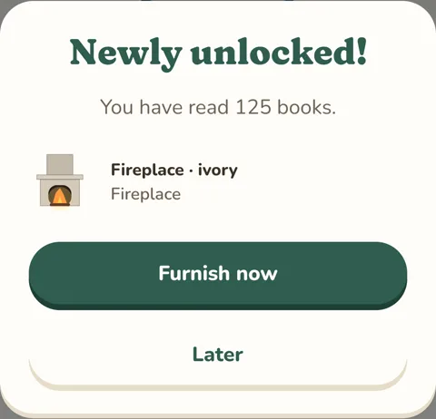
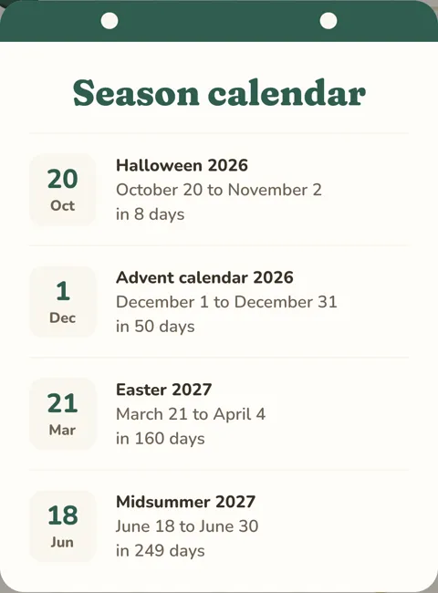
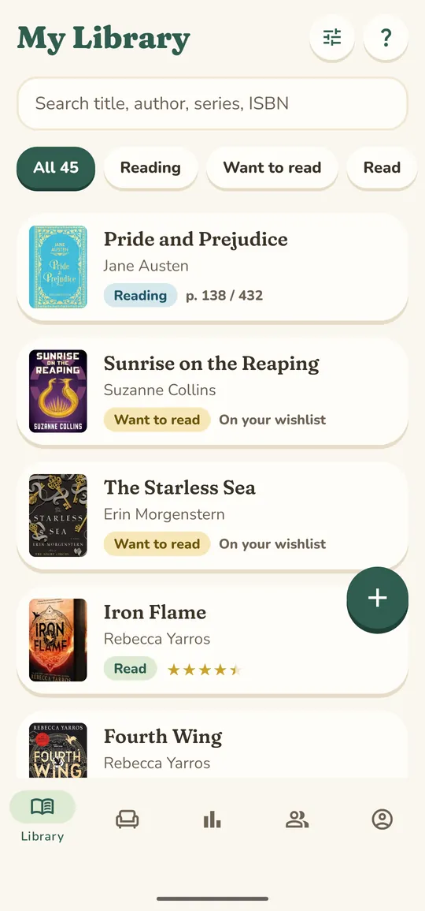
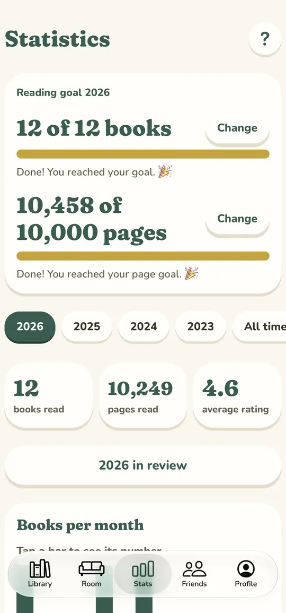
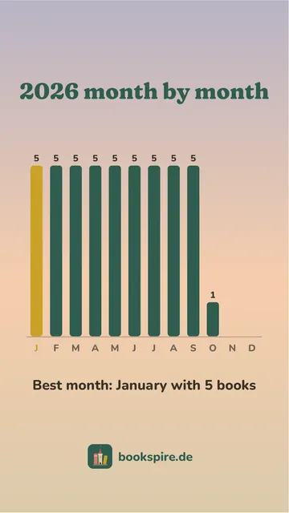
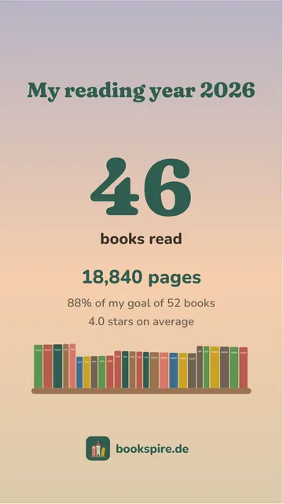
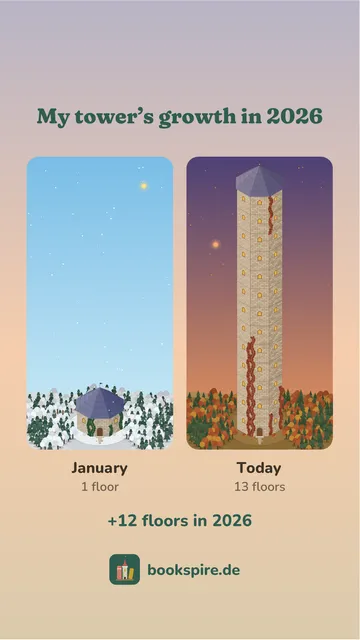
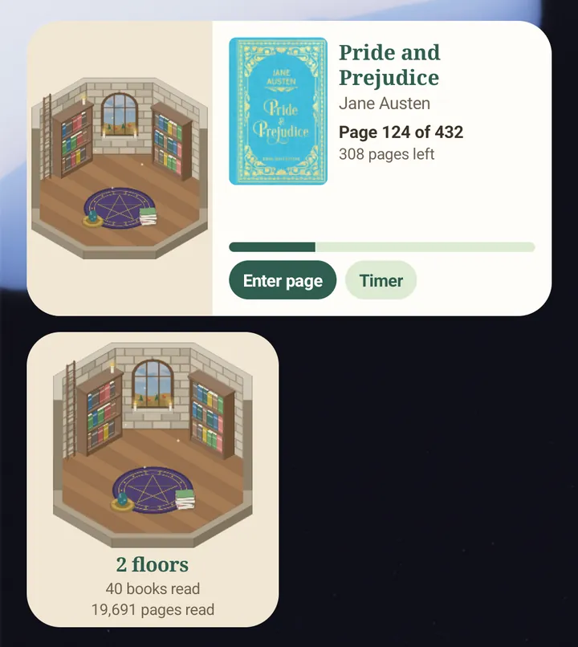
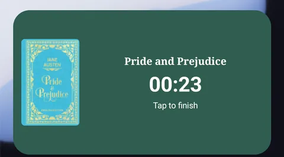
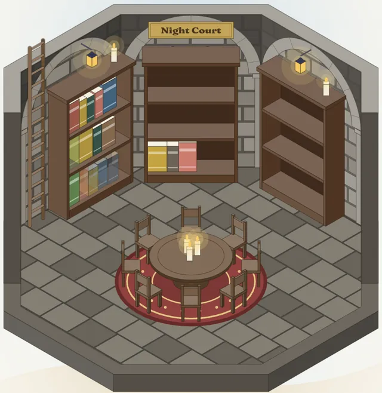

Status and stars
Read, reading, want to read or abandoned. Rate with half stars, write notes, mark favourites. While you read, Bookspire estimates when you will finish.
For everyone with too many books. So, for you.
Bookspire keeps track of what you read and turns it into a reading room. Every book you finish moves onto a shelf, and once the shelves are full, your tower gains a new floor. You read as always: on paper, an e-reader or as an audiobook.

Free for iPhone and Android.
In bed, on the train, on paper, an e-reader or as an audiobook. Add your books by scanning the ISBN, searching or importing from Goodreads and co.
A few taps, and Bookspire knows which page you're on. Once you turn the last page, the book gets its stars and a note on what it did to you.
Every book you finish moves onto a shelf. Every one you finish from now on unlocks something new for your reading room.
Every book you finish stands on a shelf, spine out, side by side with all the ones that kept you up at night. What is still waiting piles up on the ground floor. Yes, your TBR gets its place too. And what you still wish for hangs on a scroll right beside the shelf. Tap a shelf to see every title up close.
Once every shelf on a floor is full, a magic cloud wraps the top of your tower, and it gains a new floor. From outside, you can see how far you have come. Book by book, floor by floor.
From the third floor up, an open stone arch can replace the window. Behind it lies a small balcony with a wooden railing, and from outside you can see it jutting from the tower.
A wing chair for long chapters. Candles for the nights when you read just one more page. And then another. Walls of moss stone or star stone, a fireplace instead of the window: every book you finish from now on unlocks something. Where it goes and in which colour is up to you.

The view from the window follows day and night, the seasons and the weather. Sometimes clouds drift past, sometimes rain patters against the glass, in summer a thunderstorm rolls in, and in winter the snow falls.
Special seasons await for Halloween, Easter and Midsummer, and during Advent you open a little door every day with something new for your reading room or your avatar.

Create your avatar. It wanders through your reading room, curls up in the armchair and loses track of time in a book. Every page you log brings new clothes, hairstyles and colours.
From the start there is something for everyone, from curls and afros to a hijab. And if you like, your avatar rolls through the room in a wheelchair and reads beside the armchair.
Behind the tower sits your whole library: reading status, ratings, notes, statistics on your reading year and a goal for books or pages that keeps count. Like Goodreads and co. – except here, numbers turn into a home.


Read, reading, want to read or abandoned. Rate with half stars, write notes, mark favourites. While you read, Bookspire estimates when you will finish.
Find any book in seconds, sorted by author, with series in the right order. Your own tags like “autumn reads” or “comfort read” let you sort everything the way that makes sense to you.
Keep the sentences you never want to forget. A photo of the page is enough, your phone reads the text itself. Every quote can be shared as a picture.
Bring your library from any app with a CSV export, and take it with you just as easily: as a CSV file or a backup.
How many books, how many pages, your strongest month and how tall your tower has grown: Bookspire sums up your reading year in cards. Swipe through, save them to your photos or share them straight to your story.
You can share your reading room and your tower as a picture any time, too, story-sized and with your numbers.



You don’t have to open the app for a quick page. Widgets show your current book and your reading room in the light of the time of day. One tap on “Enter page”, and your progress is logged.
If you want to know how long you really read, start the reading timer from the book or the widget. Start it in the app, and on iPhone the clock also runs on the lock screen and in the Dynamic Island.


Look around your friends' reading rooms – and see what is on their pile.
Send a book with a note. One tap puts it on their reading list.
Who reads the most pages this month? A little nudge among friends – joining in is up to you.
You choose what friends may see. Without an account, everything stays on your phone.
Beneath your tower, every book club gets a vault of rough stone, with lanterns, a round table and shelves full of the books you have read together.
There you suggest books and vote on what you read next. For the current book you see where everyone is, and one tap puts the next meeting in your calendar.
A link is all it takes to join. Joining is free; to found your own club, join the guild.

Right from the start, an egg lies in your reading room. With every page you log, it gets a little warmer. One day, the first crack appears.
What hatches from it? We won't tell. Read on and find out.

Why I build Bookspire
I’m Michael. I love high fantasy, play Dungeons & Dragons and listen to metal. In D&D, a character grows with every session and carries their story for everyone to see. All my books left behind was a list of checkmarks and a statistic that felt like nothing.
I hope that in a few years you look at your tower and remember: the book that kept you up at night, the recommendation that became a favourite. Not a progress bar, but a place full of stories you lived through yourself.
I build Bookspire on my own, in my free time. If you spot a bug or have an idea for Bookspire, you can reach me at kontakt@bookspire.de.
No. You read as usual – on paper, an e-reader or as an audiobook – and only log in Bookspire how far you are.
All the more. Every page counts, and your very first book brings something new into your reading room. You can set a reading goal, but you don't have to.
There you collect lists and charts. In Bookspire, every book becomes something you can see: a shelf that fills up, a room you furnish, a tower that grows. Your Goodreads library comes right along.
Partly, and I want to be open about it. I build Bookspire on my own, and an AI helps me write the code. Without it, I could not build an app of this size as a single person. The idea, the design and every decision about what Bookspire does and how it feels come from me. I test every change myself before it reaches you, and friends help me with it.
The pictures were made the same way: the room, the tower and the items are drawn as shapes in code and refined step by step until everything fits together. I have never used an image generator, and no picture imitates the style of an illustrator.
There is no AI inside the app itself. There are no generated texts, no recommendations from a language model, and your data does not train any model. I know that many people in the book community are critical of AI, and I understand why. That is exactly why you should know where you stand.
Yes. Bookspire imports your books from Goodreads, BookBuddy or any CSV file. Books that are already there are skipped. Getting them out again is just as easy: as a CSV file or a backup.
Yes. E-books count in pages just like printed books. For audiobooks you enter how many percent you have listened to, and Bookspire turns that into pages of the print edition. So your tower and shelves grow with every format.
Joining is free; all you need is an account and the invite link. Whoever founds and leads a club needs the guild.
No. Without an account, everything stays on your device. With one, your library and tower are backed up and synced, and you can find friends. To sync several devices at once, join the guild.
Bookspire itself contains nothing children shouldn’t see. Covers and blurbs, however, come from the book trade and show what a book is about, including novels for adults. That is why Bookspire is rated 16+ in the stores, and you can create an account, which syncs your library and lets you find friends, from the age of 16 as well. Without an account, everything stays on your device.
Nothing, and that won’t change: your library, logging, statistics, friends and your growing tower are free. For everyone who wants more, the Bookspire Guild, a subscription with every floor to furnish, the guild shop and guild statistics, for €2.99 a month or €24.99 a year.
Download Bookspire and create an account in the app with the same email address you signed up with. The “First Page” set then moves into your tower by itself. This works for three months after launch; after that, we delete the waitlist.
Bookspire is here, free for iPhone and Android. Your first book is already waiting for its place on the shelf.